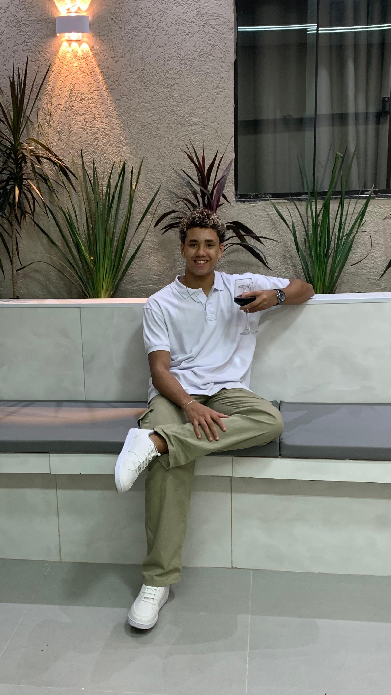

Portfólio Pessoal
Landing page pessoal desenvolvida para apresentar minha trajetória, habilidades, tecnologias e projetos na área de desenvolvimento de software.
Concluído
Desenvolvedor Java Back-End em formação
Transformando conhecimento em soluções através do código.

Sou estudante de Engenharia de Software na UNICEPLAC e estou focando minha preparação prática em desenvolvimento back-end. Apesar de estar no início da minha trajetória profissional em TI, venho me dedicando constantemente a transformar meus conhecimentos teóricos em desafios e projetos práticos de código.
Atualmente, sigo um roteiro estruturado de estudos que abrange desde Lógica de Programação e Orientação a Objetos com Java até o desenvolvimento de aplicações utilizando Spring Boot, Spring Data JPA, Spring Security e bancos de dados SQL, como MySQL e PostgreSQL. Também busco aprimorar minhas habilidades profissionais, sendo uma pessoa organizada, comunicativa, proativa e com facilidade para trabalhar em equipe.
Estou em busca de uma oportunidade para aplicar minha base técnica em projetos reais, aprender com profissionais experientes e contribuir para os desafios de desenvolvimento da empresa, enquanto continuo evoluindo como profissional de tecnologia.
Projetos e ideias em que estou trabalhando e colocando em prática.
Landing page pessoal desenvolvida para apresentar minha trajetória, habilidades, tecnologias e projetos na área de desenvolvimento de software.
Concluído
Landing page desenvolvida para um Personal Trainer, com foco na apresentação de seus serviços, acompanhamento personalizado e conversão de visitantes em novos alunos.
Em desenvolvimento
API para gerenciamento de tarefas, com funcionalidades de criação, edição, conclusão e exclusão de tarefas.
Planejado
Projeto voltado para o gerenciamento de livros ou itens de uma locadora, explorando conceitos de programação, orientação a objetos e persistência de dados.
Planejado
API para gerenciamento de produtos, categorias, carrinho de compras e pedidos, com foco em boas práticas de desenvolvimento e segurança.
Planejado
Landing page desenvolvida para um Personal Trainer, com foco na apresentação de seus serviços, acompanhamento personalizado e conversão de visitantes em novos alunos.
Em Desenvolvimento
Vamos conversar? Me envie uma mensagem ou acompanhe meu trabalho nas redes abaixo.